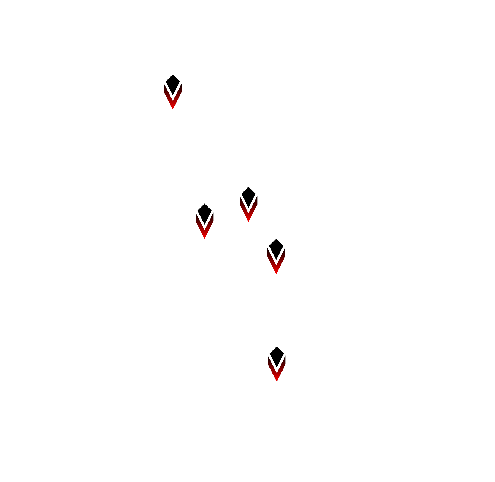

icon_viz_layer¶
绘制一个图标图，需要先后调用 vega_icon 和 icon_viz_layer 两个接口，首先使用 vega_icon 构建描述图标图渲染样式的 VegaIcon 对象，然后使用 icon_viz_layer 渲染图像。
vega_icon¶
arctern.util.vega.vega_icon(width,height,bounding_box,icon_path,coordinate_system)
根据给定的配置参数，构建描述图标图渲染样式的 VegaIcon 对象。
参数
* width(int) – 图片宽度，单位为像素个数。
* height(int) – 图片高度，单位为像素个数。
* bounding_box(list) – 图片对应的地理坐标区域，以 [x_min, y_min, x_max, y_max] 的形式表示一个矩形区域。图片左下角的像素坐标 (0, 0) 对应地理坐标 (x_min, y_min) ，图片右上角的像素坐标 (width, height) 对应地理坐标 (x_max, y_max)。
* icon_path(str) – 图标png文件的绝对路径。
* coordinate_system(str) – 可选参数，表示输入数据所属的地理坐标系统，默认值为”EPSG:3857”，当前支持的地理坐标系统请参照 https://spatialreference.org/。
返回值类型
arctern.util.vega.icon.vega_icon.VegaIcon
返回
用于描述渲染样式的 VegaIcon 对象。
icon_viz_layer¶
arctern.icon_viz_layer(vega, points)
根据坐标位置绘制图标图。
参数
* vega(VegaIcon) – VegaIcon 对象。
* points(Series(dtype: object)) – 坐标位置，格式为WKB。
返回值类型
bytes
返回
base64编码的png图片。
示例:¶
>>> import pandas as pd
>>> import numpy as np
>>> import arctern
>>> from arctern.util import save_png
>>> from arctern.util.vega import vega_icon
>>>
>>> # 读取 csv 文件并创建绘图数据
>>> df = pd.read_csv("test_data.csv", dtype={'longitude':np.float64, 'latitude':np.float64, 'color_weights':np.float64, 'size_weights':np.float64, 'region_boundaries':np.object}, nrows=10)
>>> region = arctern.ST_GeomFromText(pd.Series(['POLYGON ((-74.01424568752932 40.72759334104623, -74.01424568752932 40.76721122683304, -73.96056823889673 40.76721122683304, -73.96056823889673 40.72759334104623, -74.01424568752932 40.72759334104623))']))
>>> d=pd.DataFrame(region).T
>>> region = region.append([d]*(df.shape[0] - 1))
>>> in_region = arctern.ST_Within(arctern.ST_Point(df['longitude'], df['latitude']), region[0])
>>> df['in_region']=in_region
>>> input1 = df[df.in_region == True].reset_index()
>>>
>>> points = arctern.ST_Point(input1['longitude'], input1['latitude'])
>>>
>>> # 根据 input1['color_weights'] 绘制图标图
>>> vega = vega_icon(1824, 1777, bounding_box=[-74.01424568752932, 40.72759334104623, -73.96056823889673, 40.76721122683304], icon_path='path_to_icon_example.png', coordinate_system='EPSG:4326')
>>> png = arctern.icon_viz_layer(vega, points)
>>> save_png(png, "/tmp/python_icon_viz.png")
渲染结果如下： 